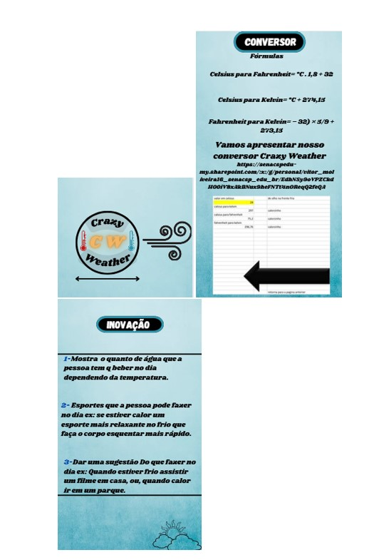

Durante as aulas de física, recebemos o desafio de “desenvolver” e criar o design de um aplicativo relacionado às matérias da área, unindo tecnologia e aprendizado. O meu grupo trabalhou na ideia de um aplicativo inovador chamado Crazy Weather, que oferecia diversas funcionalidades interessantes.
Ele fazia a conversão de temperaturas entre diferentes escalas, além de contar curiosidades sobre a história das medidas climáticas, agregando um toque educativo. O grande diferencial em relação a outros aplicativos do gênero era sua capacidade de oferecer sugestões de atividades baseadas no clima atual. Por exemplo, em um dia ensolarado, recomendava um piquenique ou um passeio de bicicleta; já em dias frios, sugeria tomar um chocolate quente ou assistir a um filme. Essa abordagem criativa e interativa tornava o Crazy Weather mais do que um simples app de meteorologia, transformando-o em um companheiro para planejar atividades do dia a dia de forma prática e divertida.
Ingrid, nunca esquecerei das suas aulas de física, elas são incríveis. Nunca perca essas dinâmicas em suas aulas, por favor
Segue algumas imagens de referência:
